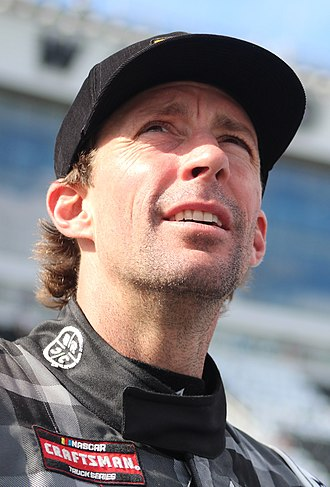

Travis Alan Pastrana (born October 8, 1983) is an American professional motorsports competitor and stunt performer who has won championships and X Games gold medals in several disciplines, including supercross, motocross, freestyle motocross, rally racing and offshore powerboat racing. He runs a show called Nitro Circus and the rallycross racing series Nitrocross.
He is a four-time Rally America champion and has also raced in the Global RallyCross Championship, Monster Jam, and Race of Champions.
Pastrana has also driven in NASCAR, which he competes part-time in the NASCAR Craftsman Truck Series, driving the No. 41 Chevrolet Silverado for Niece Motorsports (as well as 2012, 2015, 2017 and 2020). He drove for two years in what is now the NASCAR Xfinity Series, running a part-time season in 2012 and a full season in 2013. He made his NASCAR Cup Series debut in the 2023 Daytona 500, driving the No. 67 Toyota Camry for 23XI Racing.[2] He finished 11th after leading a lap in the 2023 Daytona 500. (source: Travis Pastrana's Wikipedia)


Travis Pastrana's Childhood
Born on October 8, 1983, in Annapolis, Maryland, Travis Pastrana was an only child to parents Robert and Debby Pastrana. His father built his career in the military and was of Puerto Rican descent. Travis' uncle was a quarterback for the Denver Broncos. (source: Travis Pastrana Biography